News
The Veikk A30 Graphics Tablet Review - Entry Date: 31st December 2025
Hello! I hope you had a good Christmas! (if you even celebrate it.) Two of the gifts I were given were a portable radio, and a Graphics Tablet! Specifically the Veikk A30. I've been using since Christmas (excluding the time where I got distracted in Garry's Mod and turned a TRON Recogniser prop into an actual usable aircraft) and now I think i'm ready to give a review, as a "first time" graphics tablet owner/user, whom moved from a mouse.
Quick bit of confession. The fact that I'm a "first time user" is in a technical sense. When I was in college learning some animation and art stuff (that I already knew, so that was a waste...), I did have to use a One By Wacom graphics tablet. I didn't even get much experience with it though, and the fact the Mac Minis we were using genuinely sucked and was bogged down with networking and college crap.
Now for the unboxing experience. I can't say much because the person who gifted me the graphics tablet had already opened the box and inspected everything to verify it was all in there, good on them! I also got a spare drawing glove because they weren't aware it actually came with one. Considering that it basically got repackaged. I would say that the unboxing experience was good enough.
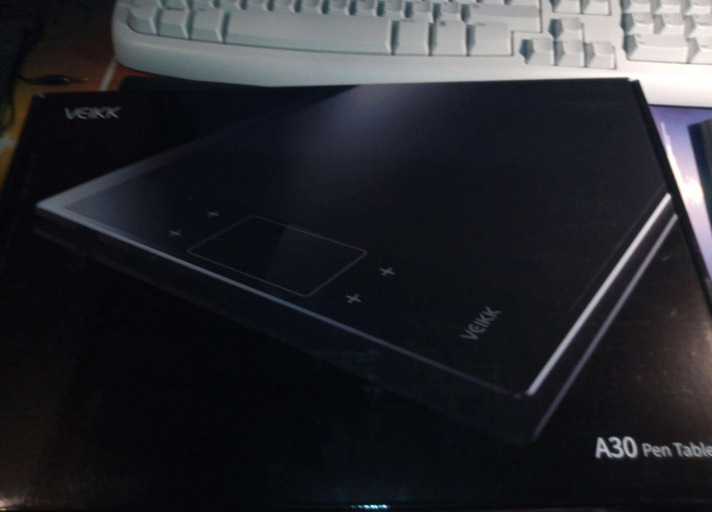
I also can't say anything on the price either, as the person that gifted me the tablet refused to disclose the price. On Amazon (As of December 31st), the current price is £57.85.
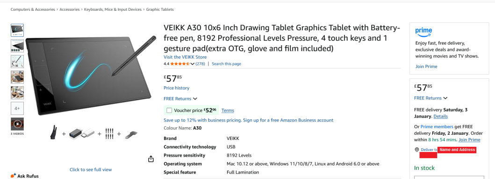
In the box, you'll find the graphics tablet, and underneath, you'll find the cable, the pen, the drawing glove and a few other bits and bobs. The cable is a USB Type-A, to USB Type-C Sync cable specifically designed with the tablet in mind. It's reasonably long, so you shouldn't have issues with it being too short. If you are, then focusing that hard on something for that long might be bad for your eyes.
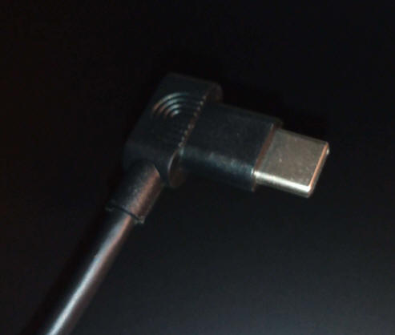
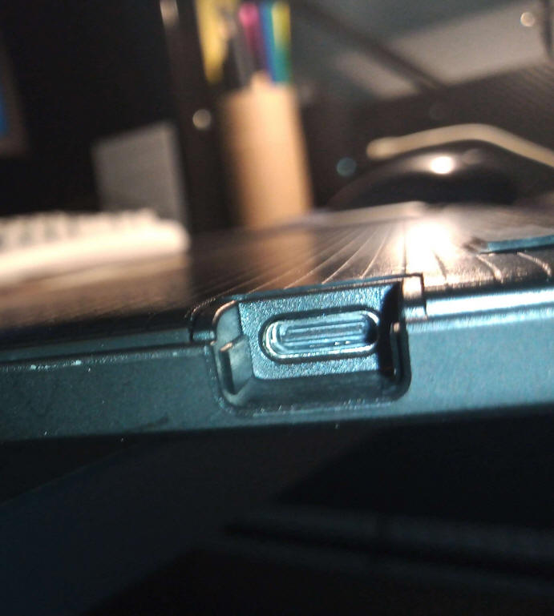
If you are cursed with a scummy anti-consumer device like a modern MacBook, worry not! In the box should also sit a USB-A to USB-C converter, so that shouldn't be an issue!
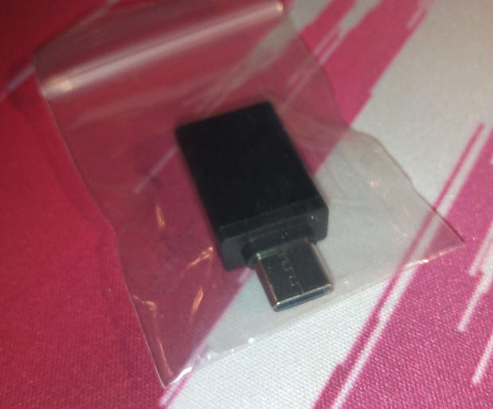
Among the other bits and bobs, there's also a card providing a driver link to the Veikk drivers, the getting started guide, and a small bag containing the nib removal tool and a few spare nibs.Now for the driver. On the Veikk website, There are drivers for Windows, Mac OS X, and Linux. According to the site, driver installation for ChromeBook users shouldn't be needed.
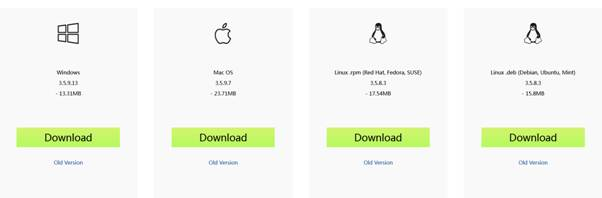
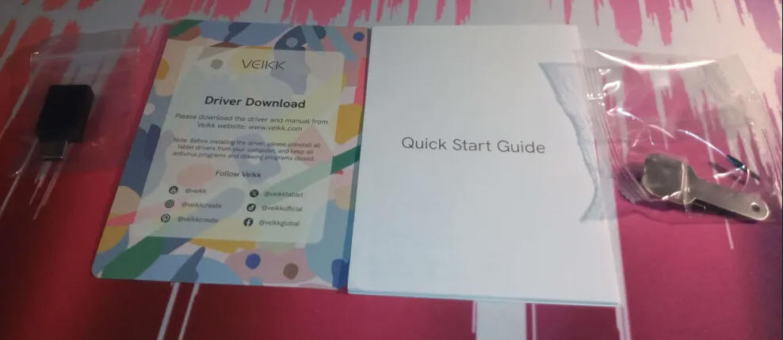
In the instructions, it also shows a diagram of the tablet connected to a mobile phone, so it should work. As I still daily drive a Samsung SGH-E900 I can't say whether it will actually work on a phone or not. Scanning the Windows version of the drivers on VirusTotal reports that 1/69 engines reported the file as malicious, it reports it as "Grayware" Said engine is CrowdStrike Falcon. This is most likely a false positive, but if you're worried, you could look for other graphics tablets that don't use this driver. I've been using it myself, and so far, there's been no malicious activity on my machine that I know of.
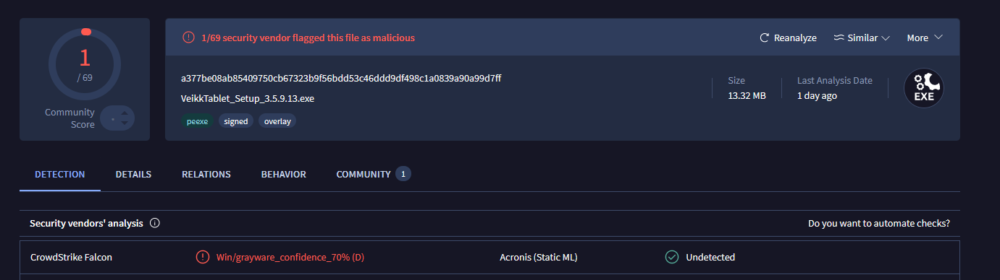
As far as I tested, the driver even works just fine on Windows 7, and it's even enabled Windows 7's Tablet PC functionalities. How glad I am that the Tablet PC input panel likes my handwriting! You can set the driver not to autorun on start-up in the setup wizard, or in MSConfig after installation. When the driver is not running, button and touch shortcuts won't work without it, and the pen may be less precise. You can run the graphics driver for that session only by pressing the "Veikk Tablet" option in the Windows Start Menu only once for the session. You can again shutdown the drive quickly by going to the overflow pane and right-clicking the Veikk Tablet option, and pressing Exit (What you're looking for is a V on a green square.) You can use the driver to configure pressure settings, the buttons or the touch panels. There's even an FPS Game Mode if you're that crazy... One gripe about the driver is that the Pen/Eraser switch option is a little buggy, and persistent. In FireAlpaca, manually switching the tool would work until I went to draw. Suddenly, it would start fighting with me, and would keep switching to the eraser the instant the pen makes contact with the surface.
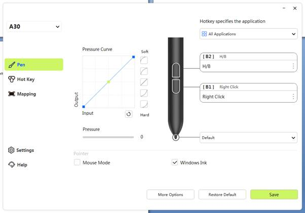
So, what about the pen? The pen comes in a nice sleeve case. I'm not aware of the material. I recommend you put it back in here when you're not using the tablet.
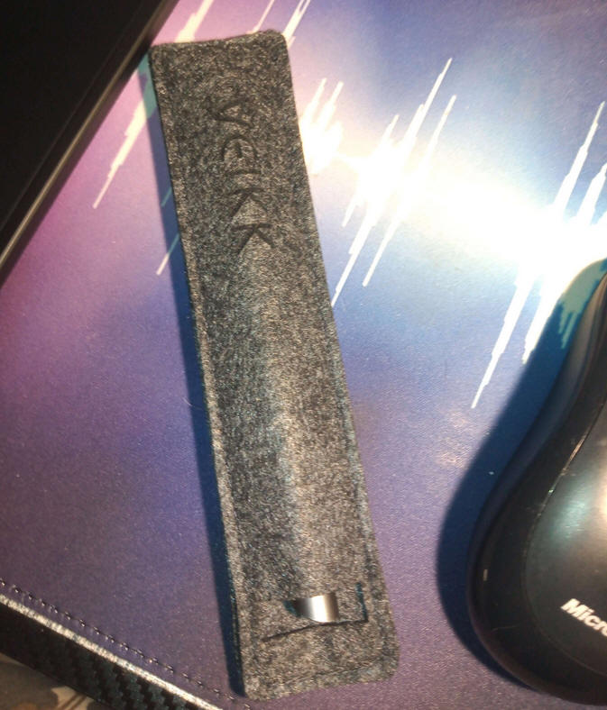
The pen itself feels fine. In fact, it feels a bit like my PaperMate InkJoy Pens in terms of the plastic. The pen seemingly doesn't run on batteries, but instead runs on the power of friendship and actually being able to pick up a pencil instead of using AI-. Nah, I'm joking (Don't use AI though)... According to some research, the pens seem to run off Electromagnetic Resonance... Kinda like a wireless charger.
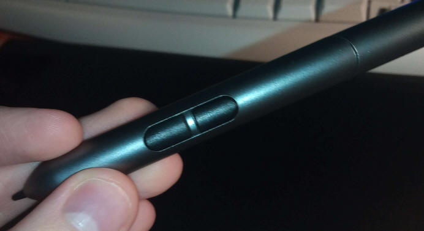
One gripe about the pen though is that the buttons have barely any resistance. This makes it incredibly easy to accidentally press a pen button when doing strokes. It's not common though, but I will still be turning the buttons off. The pen otherwise is just great, and precise.
I'm not sure what material the drawing glove is, but it seems to act a little bit like a latex glove. I'm not sure if it is actually lined with latex, so don't worry. Plus if so, the outer material is way different. On the first ever wear, the glove would cause a weird kind of itchy sensation. It doesn't seem to be affecting my skin though, and at least for me, it wasn't enough to disrupt anything. In fact, when you get to drawing, I forgot entirely about the feeling until I took notice again. After day 1, the feeling went away completely, and never came back. so I think it's just my hand getting used to it. You may be asking "But why must we need to use the glove?" To my knowledge, the glove is used to help prolong the effectiveness of the tablet by minimising contact with oils from your hands. This oil is what marks a phone screen after touching it with even clean hands. It may look like I'm making direct contact with the board, but I'm not. Just the angle.
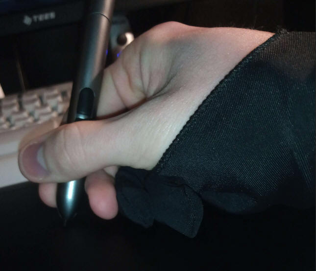
Now onto the main event. How is the tablet? I find the quality of the shell pretty high quality. The weight also isn't all that bad. As mentioned before, the only available power source is through the USB-C port. It is not wireless, and I'm glad about that. The tablet provides a 10x6" working area. It also has pressure sensitivity, with a max level of 8192. The dimensions of the tablet (according to the box) are 332x212x9 mm. I myself have to push my keyboard back towards my monitor and speakers to have it fit safely. One issue that I had was that when connected to my Dell Inspiron 1545, It was for some reason having calibration issues, and sometimes the cursor would go unpredictably erratic. I assume it's due to having not enough power, or magnetic things within the Dell are causing interference. Why I think power may be the cause? The Dell can't have an android device and an external hard drive in it at the same time. Only one will work if attempted.
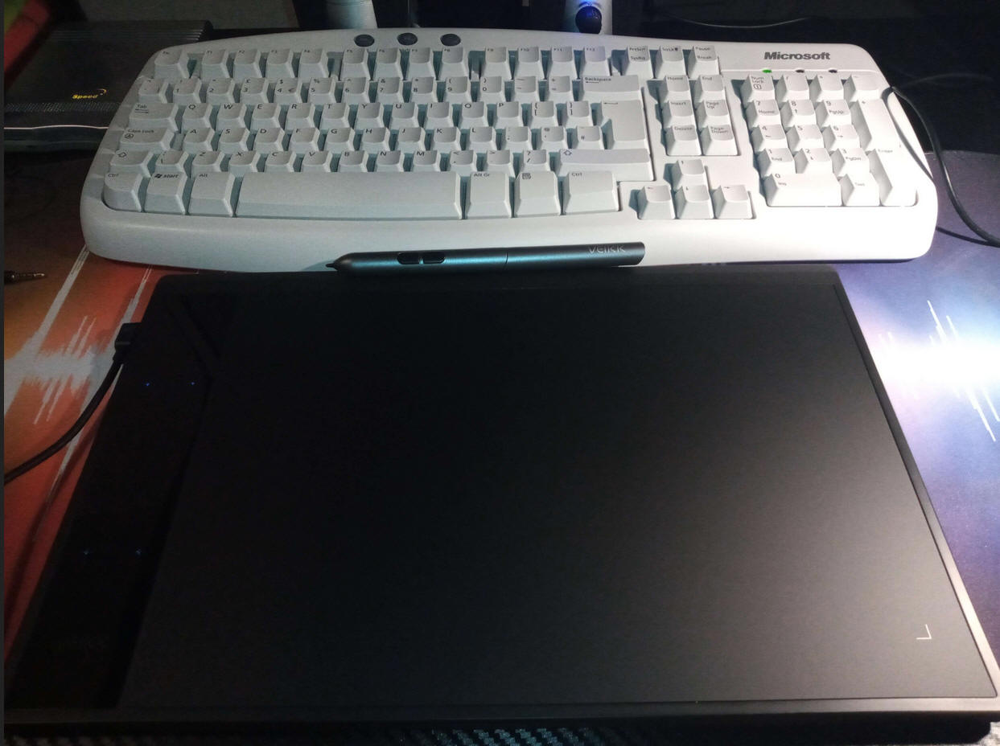
It also has a glossy fingerprint magnet for a touch panel on the side. While I see the use and convenience case perfectly, I think that the touch is a little too sensitive, and needs improvement. It's liveable though, and can too be disabled by the driver if you have too much trouble. In my use, it was reacting to even the slightest touch from clothing. Due to my posture, I would commonly encounter issues where the tablet would randomly send zoom, undo and redo requests while doing strokes. As long as you take care not to make contact with the panel accidentally, there's nothing wrong with it. It also has a trackpad gesture spot in the middle, that you can configure to execute actions when swiping it with all 4 directions. (Up, Down, Left, Right.). Swipes cause the configured keys/macros to execute in a turbo button kind of way. I myself configured the up and down gestures to send CTRL + and CTRL - inputs. This in FireAlpaca are zoom shortcuts and work just fine.
How is drawing with the tablet, you may ask? It's perfect, in my opinion. I made 2 artworks with it, and it went swimmingly. It was also much easier to tidy up the line art than with a mouse. I've tested it with the Apple IIGS emulator "GSPlus" too, and with the program "GSPaint", I was able to make a tiny little test doodle!
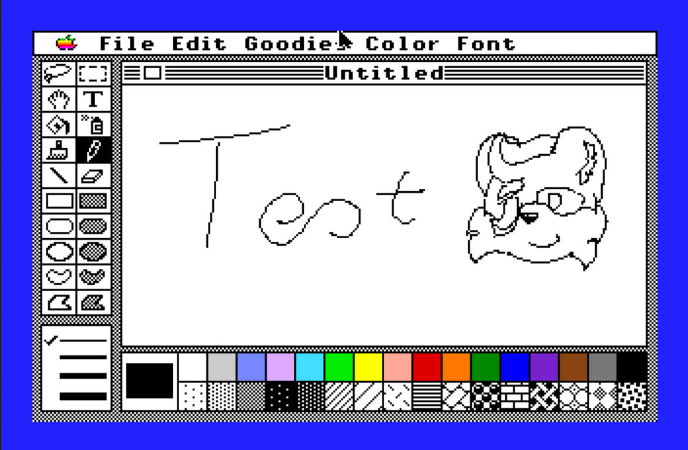
In terms of use with FireAlpaca? Since Christmas, I have made 2 different artworks. One I can't show here, due to my site's policy. The most recent doodle however is pretty adorable. My Randomiser program dictated that I should doodle Axl accidentally meeting the Lego character Unikitty! Here you go! I sketched up Unikitty by doing rough and small pencil strokes...
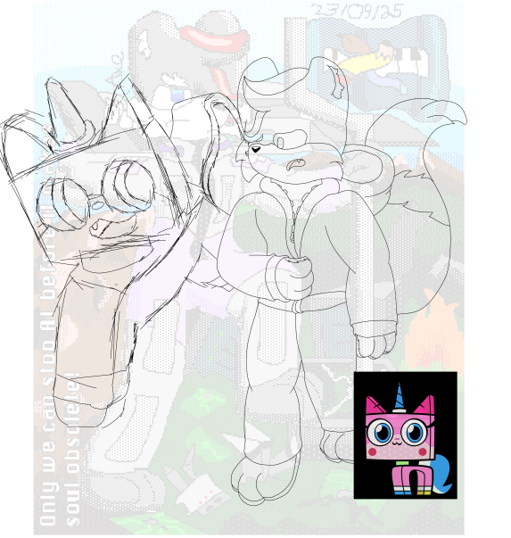
Here's the finished result!
(Warning: Unikitty is a Minor according to Fandom! (read Personality and Traits) This artwork was made with moral intention.)
Thanks for reading, and I hope you get on nicely with the A30! As this is my last post and day of the year...
(This was typed up in Microsoft Office Word 2007. All sources have been checked, provided and verified. A spell check has also been executed on the United Kingdom Setting.)